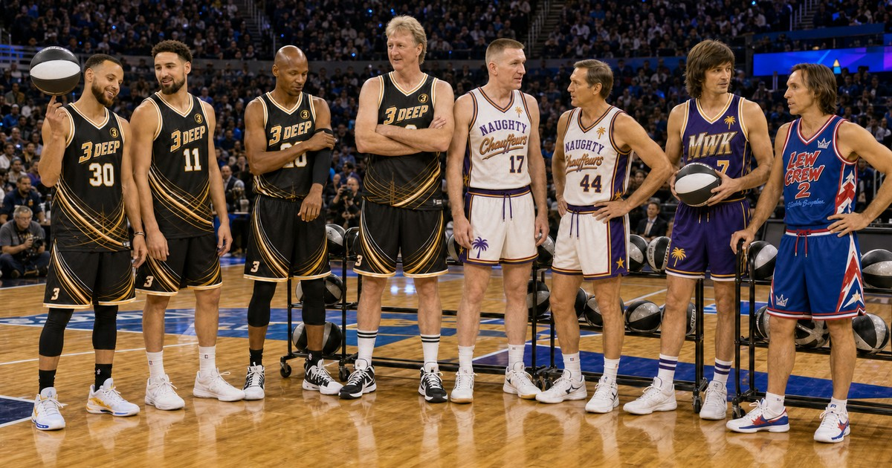
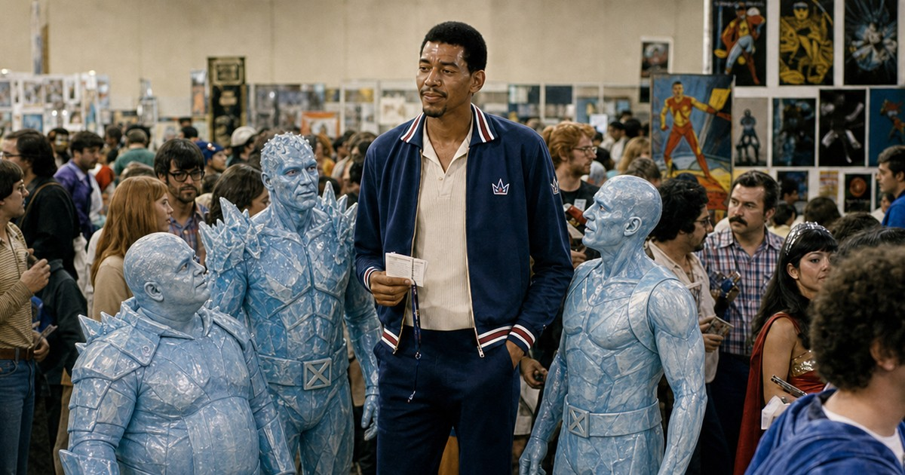
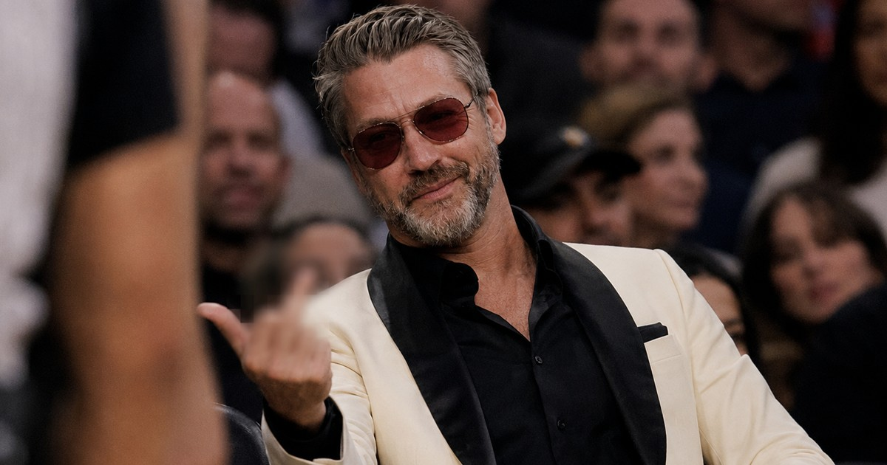
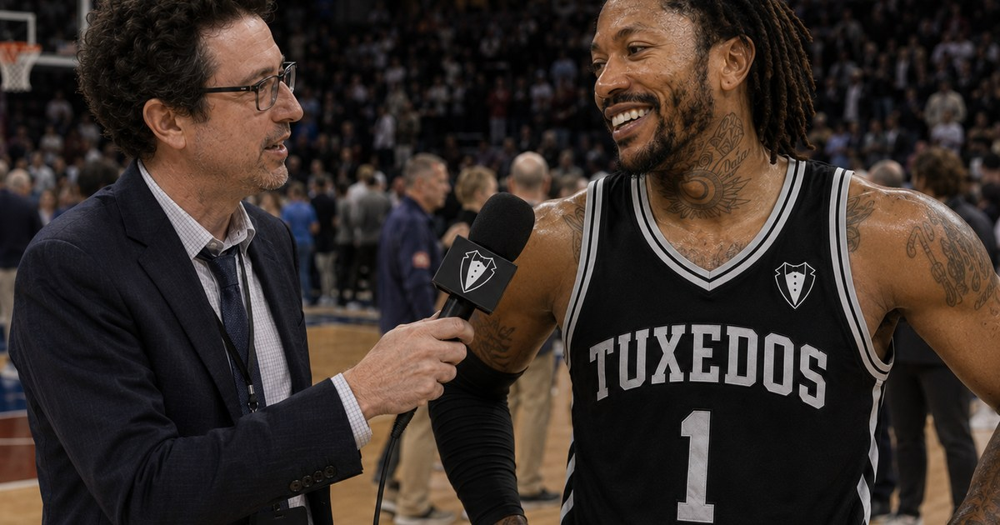
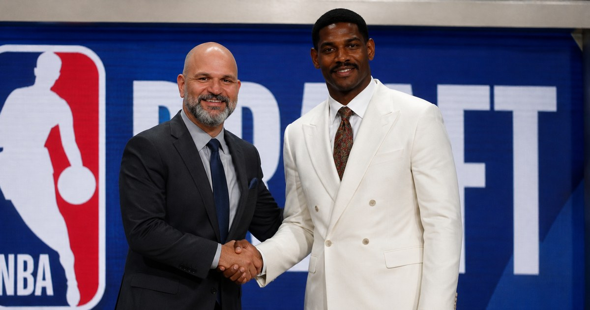
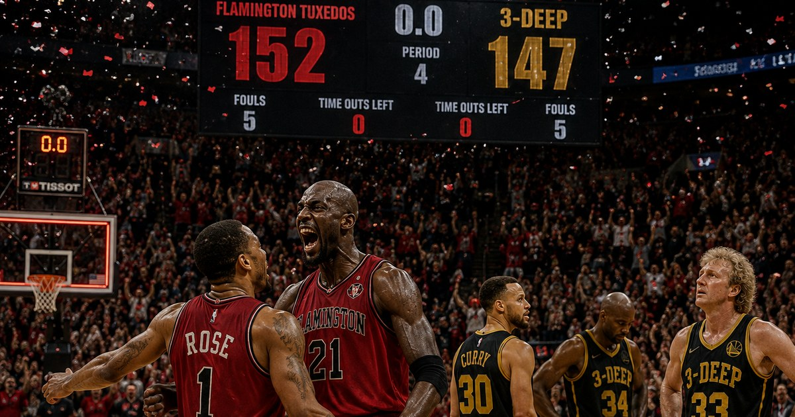
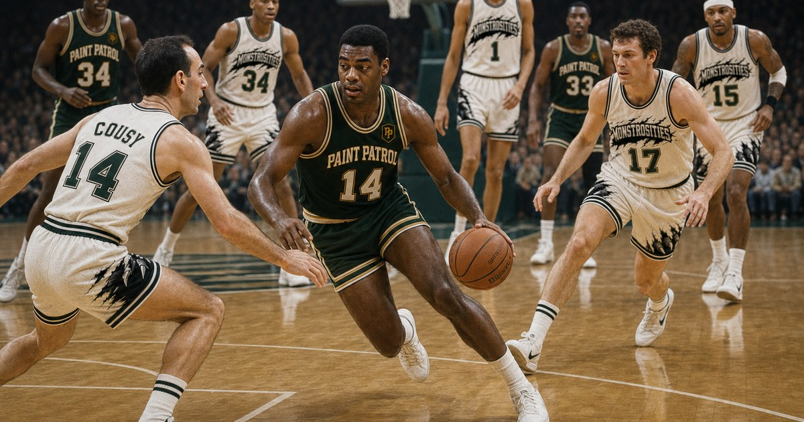

All Stories
Every article from around the league, most recent first.

Think Piece
What Happened to the Scoring Big Man? (Part 1)
The league's highest-scoring center is averaging 13.3 points a night. On a roster full of the most dominant offensive big men in basketball history, that should be impossible. So what happened?
By Lois Kranberries · August 13, 2026

Think Piece
What Happened to the Scoring Big Man? (Part 2)
Church basements, competitive pumpkin growing, and a very specific kind of pinball rivalry — where the league's greatest scorers went when the ball stopped coming their way.
By Lois Kranberries · August 13, 2026

Feature
One Ring to Rule Them All: Can Elgin Baylor Finally Get His?
He walked away nine games into the season that ended in a championship without him. Fifty-some years later, Laurel Canyon might be giving the league's most unsung legend one more shot at the thing that always got away.
By Lois Kranberries · August 11, 2026

Feature
The Midseason All-Stars: Twenty-Four Deep, No Ground Given
Half a season is enough time to know who belongs on the biggest stage — the League's voting panel picked the 24 who earned it.
By Larry Kuppleton · August 3, 2026

Feature
Dominique Exacts Revenge, Shatters the Competition in Epic Dunk Contest
Thirty-nine years after Chicago robbed him in front of his own hometown judges, Wilkins finally got the ending he always thought he deserved — and brought his own glass to make sure of it.
By Larry Kuppleton · August 8, 2026

Feature
Bird Outlasts West in 3-Point Duel for the Ages, Opens Up About a Difficult Season With 3-Deep
Neither man missed for the better part of twenty minutes. Only one of them could leave with the trophy — and only one of them left in the courtesy car.
By Larry Kuppleton · August 8, 2026
Profile
The Numbers Never Miss. The Players Keep Doing It Anyway.
How “Stats” Charney built a comedy empire with alien shellfish, bought basketball's fastest franchise, and is now searching for the one statistic that can end the San Francisco 3-Deep's spectacular collapse.
By Larry Kuppleton · August 7, 2026

Opinion
The Iceman Cometh
George Gervin is putting together an MVP case built on twelve unforgettable games for a Queens team that hasn't even been winning — and that's exactly what makes it real.
By Larry Kuppleton · August 7, 2026

Feature
A rivalry by the slimmest of margins
Two games, six combined points of margin, and a season series Laurel Canyon has swept despite their best player shooting 29% across both nights.
By Larry Kuppleton · August 6, 2026

Profile
Mogul Mike: the most talked-about man in two arenas
Rubber ducks made him rich, courtside seats made him famous, and a running feud with the men in stripes has made him a weekly storyline all his own.
By Larry Kuppleton · August 5, 2026

Feature
The long Rose back to redemption
Four straight wins, a 36-point night, and a player the real game moved on from too early finally getting his runway.
By Larry Kuppleton · August 4, 2026

Analysis
Draft-day bargains and busts, checked against a real season
A season's worth of games is in the books — here's what the auction got right, what it got wrong, and which GM is quietly running the most efficient roster in the league.
By Larry Kuppleton · August 5, 2026

Opinion
Is it too early to panic for 3-Deep?
A top-three offense and a bottom-of-the-league defense have combined for the league's only winless record.
By Larry Kuppleton · August 4, 2026

Game of the Week
Five-deep Blankendorf outlasts Oscar's masterpiece
Five players in double figures survive a 25-point, 12-assist night from Robertson in a game that came down to the final possessions.
By Larry Kuppleton · August 4, 2026